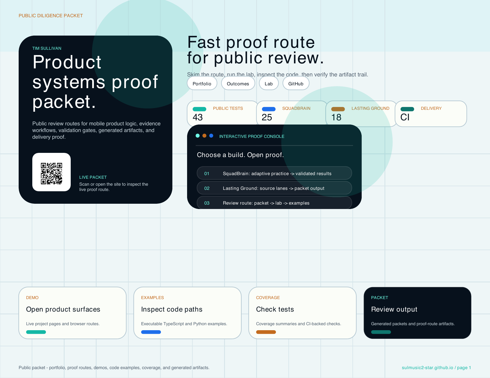

Diligence packet
A sharper proof packetfor evaluating the work.
A three-page PDF artifact with a tighter proof route, implementation ledger, timing paths, GitHub examples, coverage, QR route, and sample outputs.

Packet inspector
Not another static PDF.A review trail in three pages.
The page preview now exposes the packet structure before anyone opens the file: route first, evidence ledger second, review depth third.
Opening page for the public proof route: portfolio, outcomes, systems lab, GitHub, and packet artifacts.
Review command center
Choose the depth.Open the exact proof.
The packet now works as a compressed review system: fast skim, medium inspection, or deeper architecture/code review.
Why it exists
Make the proof portable.
A reviewer should be able to save, forward, or skim one artifact and immediately see where the serious proof lives.
Portfolio, outcomes, lab, GitHub, and proof console in one scannable opening page.
Project surfaces, operating logic, guardrails, artifacts, tests, coverage, and public routes.
One-minute skim, five-minute lab, model review, evaluator console, and QR handoff.